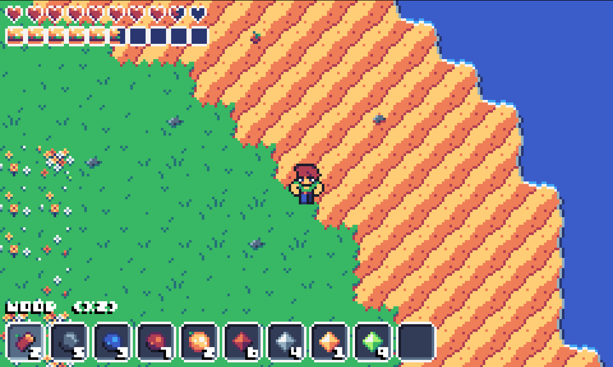
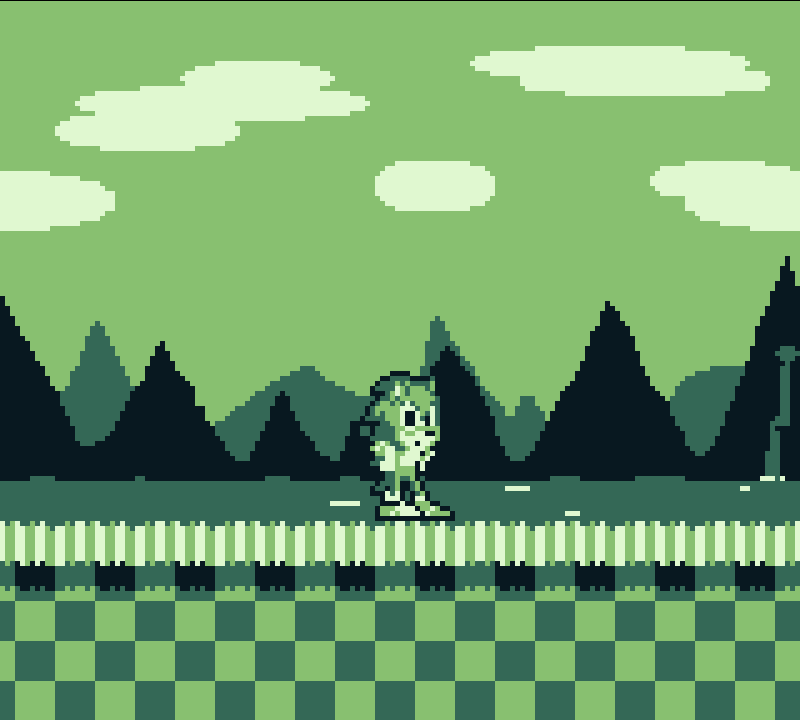

Luke Willis
Theatre and Gamedev enthusiast
Theatre and Gamedev enthusiast
My name is Luke Willis.
I've loved video games since I was young - but I loved the idea of making them even more.
Thanks to this,
I've been learning to program! It can be a bit difficult sometimes, but it's 100 percent worth it.
I'm
fluent in JavaScript, I know a little C++, and I'm currently learning the Rust programming language.
I
also love to act! I'm not particularly great in the singing or dancing department, but I like to think I'm
pretty funny. Granted, I'm not the most skilled out there, but it certainly is fun.
If you want to
contact me, my e-mail is willisluke262@gmail.com. I can't guarantee I'll respond, but I'll do my best!
What if Final fantasy from the Super Nintendo was a sandbox game? That's what this game is. Or, at least what it'll hopefully be. It's still a work in progress. It's being made in Rust, which I'm still learning as of right now.
Screenshot from the old JavaScript version of the game (HERE if you're interested!)Imagine if stardew valley was also a space exploration game. Wouldn't that be something? This is mostly just an idea as of right now, but there is an OST being made for it by my good friend, C3aloeV.
This hasn't really been worked on yet, so no image. Sorry!A simple MP3 player and organizer. Haven't made it yet, but I do need an app like it; so I figured I could make one.
This hasn't really been worked on yet, so no image. Sorry!I thought it might be fun to make a Sonic The Hedgehog game in the style of the gameboy. So I did. More of a tech demo than anything else, but still pretty nifty!
 Uh... we goin' somewhere?